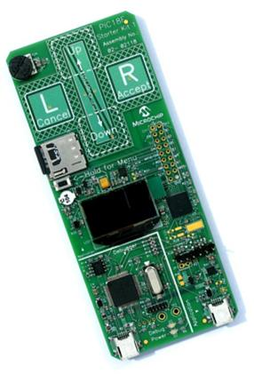
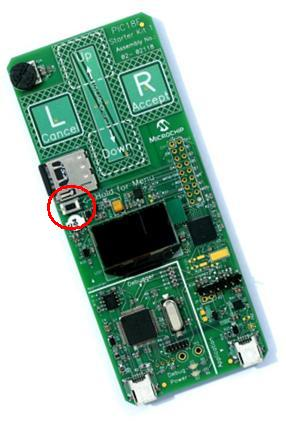

Getting Started: Running the “Device
– HID - Mouse” demo
Configuration
1: PICDEM FS USB
Configuration
2: PIC18F87J50 PIM
Configuration
4: Low Pin Count USB Development Kit
Configuration
5: PIC24F Starter Kit 1
Configuration
6: PIC18F46J50 Full Speed USB Demo Board
Configuration
7: PIC32 USB Starter Board
Configuration
8: PIC18F Starter Kit
Configuration
1: PICDEM FS USB
Configuration
2: PIC18F87J50 PIM
Configuration
4: Low Pin Count USB Development Kit
Configuration
5: PIC24F Starter Kit 1
Configuration
6: PIC18F46J50 Full Speed USB Demo Board
Configuration
7: PIC32 USB Starter Board
Configuration
8: PIC18F Starter Kit
Required Hardware:
To run this project, you will need one of the
following sets of hardware:
Configuration 1: PICDEM FS USB
PICDEM
FS USB (DM163025)
Configuration 2: PIC18F87J50 PIM
PIC18F87J50
Plug-In-Module (PIM) (MA180021)
Configuration 3: Explorer 16
Explorer
16 (DM240001)
USB
PICtail™ Plus Daughter Card (AC164131)
And one of the following PIMs
PIC24FJ64GB004 Plug-In-Module (PIM) (MA240019)
PIC24FJ256GB110
Plug-In-Module (PIM) (MA240014)
PIC32MX
USB Plug-In-Module (PIM) (MA320002)
Configuration 4: Low Pin Count USB Development Kit
Low
Pin Count USB Development Kit with PICKit 2
Debugger/Programmer (DV164126)
or without Debugger/Programmer (DM164127)
Configuration 5: PIC24F Starter Kit 1
PIC24F
Starter Kit 1 (DM240011)
Configuration 6: PIC18F46J50 Full Speed USB Demo Board
PIC18F46J50
Full Speed USB Demo Board (MA180024)
Configuration 7: PIC32 USB Starter Board
PIC32 USB Starter Board (DM320003)
Configuration 8: PIC18F Starter Kit
PIC18F Starter Kit (DM180021)
Configuring the Hardware:
This
section describes how to set up the various configurations of hardware to run
this demo.
Configuration 1: PICDEM FS USB
Configuration 2: PIC18F87J50 PIM + HPC Explorer
Configuration 4: Low Pin Count USB Development
Kit
Configuration 5: PIC24F Starter Kit 1
Configuration 6: PIC18F46J50 Full Speed USB Demo Board
Configuration 7: PIC32MX USB Starter Board
Configuration 8: PIC18F Starter Kit
Configuration 1: PICDEM FS USB
1)
If using the PICDEM FS USB Demo Board, no hardware related configuration or
jumper setting changes should be necessary.
The demo board need only be programmed with appropriate firmware.

Configuration 2: PIC18F87J50 PIM
1)
Short JP4 on the PIC18F87J50 PIM. This
allows the demo board to be powered through bus power.

2)
Short JP1 such that the “R” and “U” options are shorted.

Configuration 3: Explorer 16
1)
Before attaching the PIM to the Explorer 16 board, insure that the processor
selector switch (S2) is in the “PIM” position as seen in the image below.
.JPG)
2)
Short the J7 jumper to the “PIC24” setting
.JPG)
3)
Before connecting the PIM to the Explorer 16 board, remove all attached cables
from both boards. Connect the PIM to the
Explorer 16 board. Be careful when
connecting the boards to insure that no pins are bent or damaged during the
process. Also insure that the PIM is not
shifted in any direction and that all of the headers are properly aligned.
3a) If using the PIC24FJ64GB004 PIM, please
insure that the programming port switch is switched in the PGX1 direction.

4) On the USB PICTail Plus board, short jumper
JP1. Remove all other shorts on the
board.
.JPG)
5) Connect the USB PICTail Plus board to either
of the female PICTail Plus connectors or on the card edge connector (J9) at the
edge of the Explorer 16 board.
Note: When using the HID bootloader for PIC32, it is
important to modify the procdefs.ld file to relocate the sections of code that
will hold the bootloader and those sections that will hold the user
application. Example modified
procdefs.ld files have been provided with each project. This file is currently named
“Procdefs.ld.boot”. When using the example
project with the bootloader it is required to remove the “.boot” section of the
file. This will allow MPLAB to use this
file instead of the default linker file.
Once the linker file is renamed, however, the project will no longer
work without the bootloader. Please
rename the file in order to get the project working again with PIC32.
Configuration 4: Low Pin Count USB Development Kit
1) Short pins 2 and 3 of J14. Make sure J12 is left open.

Configuration 5: PIC24F Starter Kit 1
The PIC24F Starter Kit does not require any hardware setup
to run this demo. This demo does, however,
require the user to change the default selected device in the project before
compiling the demo.
1) Open the associated project file
for C30
2) In MPLAB Select
“Configure->Select Device”
3) In the device list box in the top
left corner of that window, select “PIC24FJ256GB106”
Configuration 6: PIC18F46J50 Full Speed USB Demo Board
1) Short JP3 to allow the board to
be powered from the USB.
.jpg)
Configuration 7: PIC32 USB Starter Board
No specific hardware configuration is required for this
demo.

Configuration 8: PIC18F Starter Kit
No specific hardware configuration is required for this
demo.

To
run this project, you will need to load the corresponding firmware into the
devices. There are two methods available
for loading the demos: Precompiled demos and source code projects.
Precompiled
Demos are available in the “<Install Directory>\USB – Precompiled Demos”
folders. Each demo should be prefaced
with the hardware platform it is compiled for.
Select the file that matches the hardware that you have and the demo
that you want to run. For more
information about how to load a precompiled project, please see the “Getting
Started – Loading a precompiled demo” guide.
The
source code for this demo is available in the “<Install Directory\USB Device
– HID - Mouse” directory. In this
directory you will find all of the user level source and header files as well
as project and workspace files for each of the hardware platforms. Find the project (*.mcp) or workspace (*.mcw) file that corresponds to the hardware platform you
wish to test. Compile and program the
demo code into the hardware platform.
For more help on how to compile and program projects, please refer to
the MPLAB® IDE help available through the help menu of MPLAB IDE
(Help->Topics…->MPLAB IDE).
Please
note that when using either the C30 or C32 demo projects you will be required
to select the correct processor for the demo board.
1) Open the associated project file
2) In MPLAB Select
“Configure->Select Device”
3) In the device list box in the top
left corner of that window, select the desired device.
This
demo uses the selected hardware platform as a USB mouse. Before connecting the board to the computer
through the USB cable please be aware that the device
will start moving the mouse cursor around on the computer. There are two ways to stop the device from
making the cursor to continue to move.
The first way is to disconnect the device from the computer. The second is to press the correct button on
the hardware platform. Pressing the
button again will cause the mouse cursor to start moving in a circle again.
PICDEM
FS USB:

PIC18F87J50
PIM:

Explorer
16:
.JPG)
Low pin count USB development kit:

PIC24F Starter Kit 1:
Please note that the pushbutton functionality is not
implemented on the PIC24F starter kit demos.
This means that the mouse curser will continue to move in circles until
the device/user side USB connection is removed from the computer.
PIC18F46J50 Full Speed USB Demo Board:
.jpg)
PIC32 USB Starter Board

PIC18F Starter Kit

Trademarks:
The Microchip name and logo, the Microchip logo,
MPLAB, and PIC are registered trademarks of Microchip Technology Incorporated
in the
PICDEM and PICTail are
registered trademarks of Microchip Technology Incorporated in the
Microsoft, Windows, and
Windows Vista are either registered trademarks or trademarks of Microsoft
Corporation in the